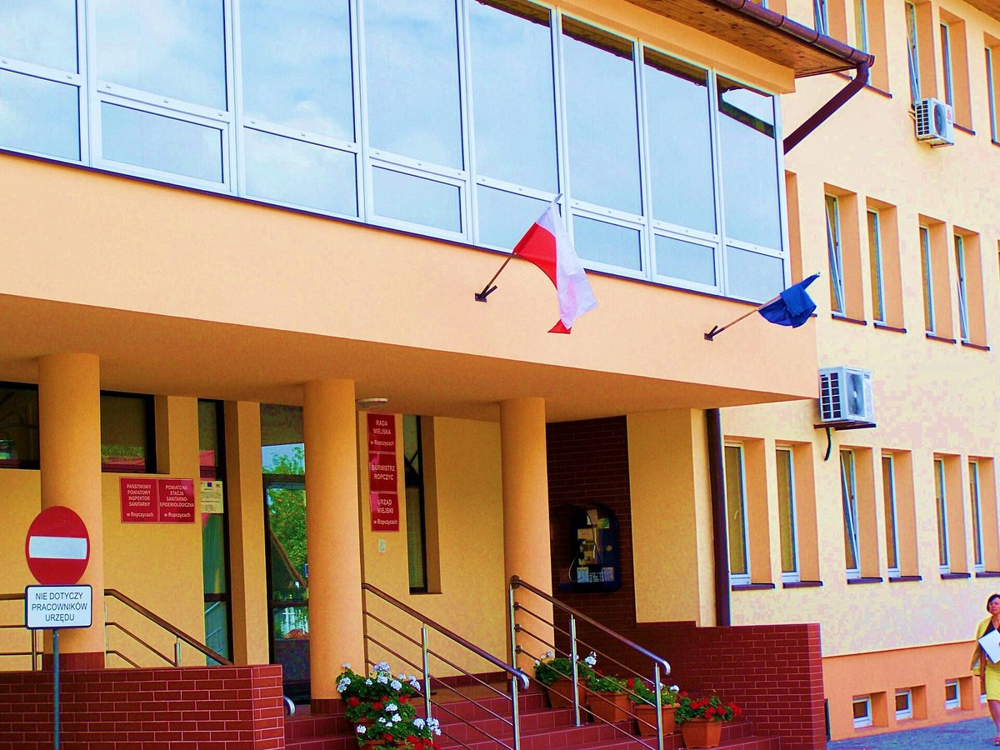

폴란드 포트카르파치에 5개 지자체 에너지 클러스터, 주택·공공건물에 재생에너지 설비 약 1,600개 설치 추진…시공 입찰에 8건 응찰

롭치체 주도 롭치체-뎅비차 클러스터, 총사업비 5,946만 즐로티 중 4,795만 즐로티를 국가회복계획에서 지원…태양광·열펌프·에너지저장장치에 수소 설비까지
폴란드 남동부 포트카르파치에주의 롭치체(Ropczyce)·뎅비차(Dębica)·이비에지체(Iwierzyce)·오스트루프(Ostrów)·지라쿠프(Żyraków) 등 5개 지자체가 함께 만든 '롭치체-뎅비차 에너지 클러스터'가 지역 안 주택과 공공건물에 재생에너지 설비 약 1,600개를 설치하는 사업의 시공 입찰에서 업체들의 응찰을 받았다. 클러스터를 이끄는 롭치체가 맡은 이 사업은 태양광 발전설비와 열펌프, 에너지저장장치를 보급하고 롭치체에 수소 설비를 짓는 내용이다. 총사업비는 5,946만 즐로티이며, 이 가운데 4,795만 즐로티를 폴란드 국가회복계획(KPO)에서 지원받는다. 입찰은 세 묶음으로 나뉘어, 개인 주택 설비에는 3개 업체가 4,142만7,669~4,676만1,670즐로티를, 공공건물 설비에는 4개 업체가 707만1,809~942만5,637즐로티를, 수소 설비에는 1개 업체가 491만8,770즐로티를 써 냈다. 지자체들은 재생에너지 이용을 늘리고 에너지 안보를 높이며 주민과 지자체를 위한 새 설비를 보급하는 것을 사업 목표로 내걸었다. 낙찰 업체와 설치 일정, 주민 부담 여부는 아직 알려지지 않았다.
시민에너지 관점
작은 지자체 5곳이 손잡고 사업비의 약 80%를 공적 자금으로 마련해 주택과 공공건물에 설비 약 1,600개를 한꺼번에 놓는다는 것은, 혼자서는 엄두를 못 내는 지자체도 묶으면 지역 단위 에너지 전환의 규모를 만들 수 있다는 점을 보여 준다. 공공이 설치해 주면 충분하지 않으냐는 시각도 있지만, 설비를 누가 소유하고 만든 전기를 어떻게 나눠 쓰는지가 정해지지 않으면 주민은 보조금의 수혜자에 머물 수 있다. EU가 2018년 재생에너지지침에서 주민·지자체·중소기업이 함께 소유하고 결정하는 '재생에너지공동체'를 제도로 인정한 것도 보급을 넘어 소유와 참여를 지역에 두라는 뜻이다. 국내 지자체들도 이웃 시·군과 공공건물·주택 태양광을 묶어 추진할 때 설비 소유와 수익 배분에 주민 몫을 처음부터 넣어야 한다.
출처: 고스포다르카 포트카르파츠카(gospodarkaPodkarpacka.pl) 2026-10-24 기자 미표기 원문 보기
ポーランド・ポトカルパチェの5自治体エネルギークラスター、住宅・公共施設に再エネ設備約1,600基の設置を推進…施工入札に8件の応札
ロプチツェが率いるロプチツェ＝デンビツァ・クラスター、総事業費5,946万ズウォティのうち4,795万ズウォティを国家復興計画が支援…太陽光・ヒートポンプ・蓄電池に水素設備も
ポーランド南東部ポトカルパチェ県のロプチツェ（Ropczyce）、デンビツァ（Dębica）、イヴィエジツェ（Iwierzyce）、オストルフ（Ostrów）、ジラクフ（Żyraków）の5自治体がつくる「ロプチツェ＝デンビツァ・エネルギークラスター」が、域内の住宅と公共施設に再生可能エネルギー設備約1,600基を設置する事業の施工入札で、業者の応札を受け付けた。クラスターを率いるロプチツェが担うこの事業は、太陽光発電設備やヒートポンプ、蓄電池を普及させ、ロプチツェに水素設備を建設するものだ。総事業費は5,946万ズウォティで、このうち4,795万ズウォティをポーランドの国家復興計画（KPO）から支援を受ける。入札は3区分に分かれ、個人住宅向け設備には3社が4,142万7,669～4,676万1,670ズウォティ、公共施設向け設備には4社が707万1,809～942万5,637ズウォティ、水素設備には1社が491万8,770ズウォティで応札した。自治体側は再エネの利用拡大、エネルギー安全保障の向上、住民と自治体のための新しい設備の普及を事業の目標に掲げている。落札業者や設置日程、住民負担の有無はまだ明らかになっていない。
市民エネルギーの視点
小さな5つの自治体が手を組み、事業費の約80%を公的資金でまかなって住宅と公共施設に約1,600基の設備を一斉に設置することは、単独では手が出ない自治体でもまとまれば地域単位のエネルギー転換の規模をつくれることを示している。公共が設置してくれれば十分ではないかという見方もあるが、設備を誰が所有し、つくった電気をどう分け合うかが決まらなければ、住民は補助金の受益者にとどまりかねない。EUが2018年の再生可能エネルギー指令で、住民・自治体・中小企業が共に所有し意思決定する「再生可能エネルギーコミュニティ」を制度として認めたのも、普及にとどまらず所有と参加を地域に置けという趣旨だ。韓国の自治体も近隣の市・郡と公共施設や住宅の太陽光をまとめて進める際には、設備の所有と収益の配分に住民の取り分を最初から組み込むべきだ。
出典: ゴスポダルカ・ポトカルパツカ（gospodarkaPodkarpacka.pl） 2026-10-24 記者名なし 原文を読む
波兰喀尔巴阡山省5个地方政府组成能源集群，推进在住宅和公共建筑安装约1,600套可再生能源设备…施工招标收到8份投标
由罗普奇采牵头的罗普奇采-登比察集群，总投资5,946万兹罗提中4,795万兹罗提由国家复苏计划资助…涵盖光伏、热泵、储能及氢能设施
波兰东南部喀尔巴阡山省的罗普奇采（Ropczyce）、登比察（Dębica）、Iwierzyce、Ostrów和Żyraków等5个地方政府共同组建的“罗普奇采-登比察能源集群”，就在区内住宅和公共建筑安装约1,600套可再生能源设备的项目进行施工招标，并已收到企业投标。由集群牵头方罗普奇采负责的这一项目，内容是推广光伏发电设备、热泵和储能装置，并在罗普奇采建设一座氢能设施。项目总投资为5,946万兹罗提，其中4,795万兹罗提由波兰国家复苏计划（KPO）资助。招标分为三个标段：私人住宅设备有3家企业投标，报价为4,142万7,669至4,676万1,670兹罗提；公共建筑设备有4家企业投标，报价为707万1,809至942万5,637兹罗提；氢能设施只有1家企业投标，报价为491万8,770兹罗提。各地方政府提出的项目目标是扩大可再生能源利用、提高能源安全，并为居民和地方政府普及新设备。中标企业、安装日程以及居民是否需要分担费用目前尚未公布。
市民能源视角
5个小型地方政府联手，用公共资金解决约80%的项目费用，一次性在住宅和公共建筑上安装约1,600套设备，这表明单靠自己难以起步的地方政府，联合起来就能形成地区层面能源转型的规模。有人认为由公共部门出资安装就够了，但如果不明确设备归谁所有、发出的电如何分享，居民就可能只停留在补贴受益者的位置。欧盟在2018年的可再生能源指令中把由居民、地方政府和中小企业共同拥有并决策的“可再生能源社区”纳入制度，用意也正是要在推广之外把所有权和参与权留在当地。韩国地方政府与邻近市郡联合推进公共建筑和住宅光伏时，也应从一开始就在设备所有权和收益分配中写入居民的份额。
来源: gospodarkaPodkarpacka.pl 2026-10-24 未署名 查看原文
Five Polish municipalities' energy cluster plans about 1,600 renewable installations on homes and public buildings as works tender draws eight bids
Ropczyce-led Ropczyce-Dębica cluster gets 47.95 million zloty of a 59.46 million zloty budget from the National Recovery Plan, covering solar, heat pumps, storage and a hydrogen unit
The Ropczyce-Dębica Energy Cluster, formed by five municipalities in Poland's south-eastern Podkarpackie region, namely Ropczyce, Dębica, Iwierzyce, Ostrów and Żyraków, has received contractors' bids in the works tender for a project to install about 1,600 renewable energy installations on homes and public buildings in the area. The project, run by Ropczyce as the cluster's leader, covers solar power systems, heat pumps and energy storage, plus a hydrogen installation in Ropczyce. Its total value is 59.46 million zloty, of which 47.95 million zloty comes from Poland's National Recovery Plan (KPO). The tender was split into three lots: three firms bid between 41,427,669 and 46,761,670 zloty for installations on private homes, four bid between 7,071,809 and 9,425,637 zloty for public buildings, and a single firm bid 4,918,770 zloty for the hydrogen installation. The municipalities say the aim is to increase the use of renewable energy, improve energy security and bring new installations to residents and local governments. The winning bidders, the installation schedule and whether residents will pay a share have not yet been announced.
Citizen Energy View
Five small municipalities joining forces, covering about 80% of the cost with public money and putting some 1,600 installations on homes and public buildings in one go, shows that local governments too small to act alone can reach the scale of an area-wide energy transition together. Some may say public installation is enough, but unless it is settled who owns the equipment and how the electricity is shared, residents risk remaining mere recipients of subsidies. When the EU's 2018 renewable energy directive gave legal standing to renewable energy communities, jointly owned and governed by residents, local authorities and small businesses, the point was to keep ownership and participation local, not just to spread equipment. Korean local governments that team up with neighbouring cities and counties on solar for public buildings and homes should build a residents' share into ownership and revenue from the start.
Source: gospodarkaPodkarpacka.pl 2026-10-24 No byline Read the original